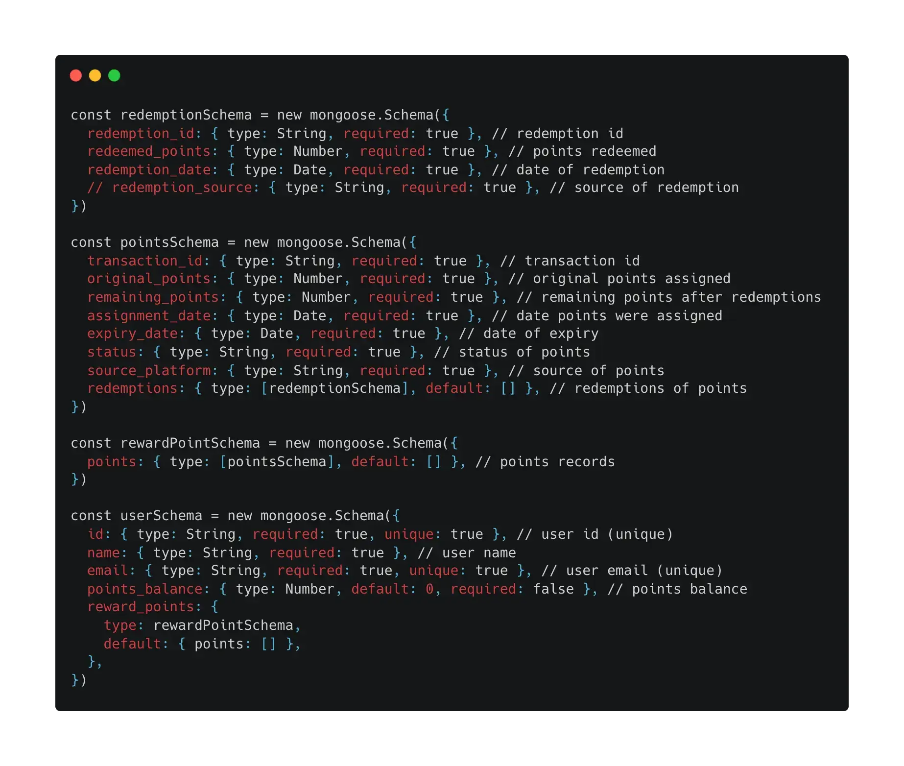
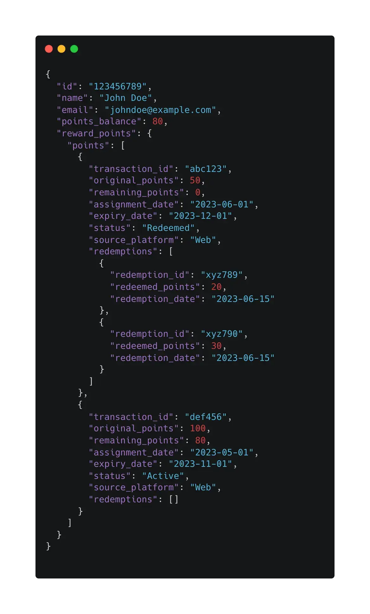

Rewards Program Requirements:
-
Integration:
The rewards program should be integrated with both Fender Digital's e-commerce store and select dealer partners, allowing customers to earn and redeem rewards both online and in-store.
-
Points Accumulation:
Customers should be able to earn points not only through purchases but also by completing specific achievements, such as completing courses on Fender Play or using Fender Tune to tune their guitars.
-
Points Expiry:
The earned rewards points should have an expiration period, typically set to one year. After that period, the points should expire and no longer be redeemable.
-
Partial Redemption:
Customers should have the flexibility to choose how many points they want to redeem at a given time. They should not be required to redeem all their accumulated points in a single transaction.
Scope and Points of Integration:
The scope of integration involves connecting various systems and platforms, including the e-commerce store, select dealer partners, Fender Play, Fender Tune, and the Fender IT Dealer Portal. The goal is to create a unified rewards program experience for customers across these different touchpoints, enabling seamless earning and redemption of rewards, synchronized points balances, and consistent user interfaces.
E-commerce Store Integration through Salesforce Commerce Cloud (SFCC):
- The rewards program should be seamlessly integrated into Fender Digital's e-commerce store.
- Customers should be able to view their rewards points balance, redeem points, and track their progress toward earning rewards within the e-commerce store's user interface.
- Integration points may include user authentication, user profile management, points balance display, rewards redemption options, and transaction history.
Fender IT Dealer Portal Integration:
- The rewards program should also extend to select dealer partners, both in-store and online.
- Integration should enable customers to earn and redeem rewards when making purchases through authorized dealer partners.
- Integration with Fender's IT Dealer Portal should be established to ensure consistency and coherence in the rewards program.
- Dealer partners should have access to the necessary tools and interfaces to manage and redeem rewards on behalf of customers.
- Integration points may include establishing APIs or data-sharing mechanisms with dealer partners, ensuring consistent rewards calculation and redemption processes, and synchronizing customer points balances across channels.
Fender Play Integration:
- Fender Play, Fender Digital's online learning platform, should be integrated into the rewards program.
- Completion of specific courses on Fender Play should earn customers rewards points.
- Integration points may include tracking course completion, awarding points based on completion milestones, and synchronizing points data with the rewards program.
Fender Tune Integration:
- Fender Tune, Fender Digital's guitar tuning application, should be integrated into the rewards program.
- Successfully using Fender Tune to tune guitars over a period of time should earn customers rewards points.
- Integration points may include tracking tuning activity, awarding points based on usage milestones, and synchronizing points data with the rewards program.
Teams and Systems Involved:
Shop Team:
- The Shop Team is responsible for the development and maintenance of Fender Digital's e-commerce store, where the rewards program will be integrated.
- They play a key role in implementing the frontend and backend functionality required for the rewards program within the e-commerce store.
- The Shop Team collaborates closely with other teams to ensure seamless integration and data flow.
Marketing Team:
- The Marketing Team is involved in the planning and execution of the rewards program from a promotional and engagement perspective.
- They determine the marketing and communication strategies for the rewards program, manage customer engagement initiatives, and analyze data to inform program improvements and updates.
Fender Play Team:
- The Fender Play Team oversees the learning platform and is responsible for the integration of the rewards program with Fender Play.
- They coordinate the tracking of course completion and the awarding of points based on those completions.
Fender Tune Team:
- The Fender Tune Team manages the tuning app and is responsible for the integration of the rewards program with Fender Tune.
- They handle the tracking of tuning activity and the awarding of points based on usage milestones.
Dealer Network Team:
- The Dealer Network Team works with authorized dealer partners and is responsible for the integration of the rewards program with dealer systems.
- They ensure consistent rewards calculation, redemption processes, and points synchronization across all dealer partners.
Data Analytics Team:
- The Data Analytics Team plays a crucial role in collecting, analyzing, and interpreting data generated from the rewards program.
- The insights derived from this data are invaluable for informing future marketing strategies, customer engagement initiatives, and product development.
IT/Technical Support Team:
- The IT/Technical Support Team is responsible for providing technical support to all teams and resolving any issues that may arise during the development, implementation, and maintenance of the rewards program.
- They also ensure that all systems and integrations function optimally and securely.
Criteria, Edge Cases and Security Concerns
Points Expiry:
- At regular intervals (e.g., daily), the algorithm checks the points balance for each user and identifies any points that have expired based on the one-year validity period.
- Expired points are automatically removed from the user's points balance.
Partial Redemption:
- When a user initiates a redemption, they can specify the number of points they want to redeem.
- The algorithm verifies that the requested redemption amount is within the available points balance for the user.
- If the requested redemption amount is valid, the algorithm processes the redemption and deducts the redeemed points from the user's balance.
- The remaining points remain intact and can be used for future redemptions.
Edge Cases:
- Expired but Unredeemed Points: A user tries to redeem points that were earned more than a year ago and are now expired but were not previously redeemed.
- Redeemed Points: A user tries to redeem points that have already been redeemed but are not yet expired.
- Insufficient Points: A user tries to redeem more points than they have in their account.
- Negative Points: A user somehow ends up with a negative points balance.
- Expiring Points: The server and database are hosted in differing time zones causing sync issues when expiring points.
- Concurrent Transactions: Multiple requests trying to redeem points for the same user at the same time (this could potentially lead to race conditions where more points are redeemed than the user actually has).
- Data Consistency: The frontend and backend data are out of sync, perhaps due to a failure in updating one or the other.
- Inactive User Accounts: A user who hasn't used their account for a long time may try to redeem points; you might want to consider if points expire due to inactivity.
- Database Failures: The database is down or otherwise not responding, causing failures in updating the points balance.
- User Identification: The system fails to correctly identify the user, or two users have the same identification information (like name or email).
- Redeeming Points During Acquisition: A user tries to redeem points at the exact same time as they are earning new points.
Security Concerns:
- User Authentication: Before allowing any redemption, the algorithm verifies the user's authentication to ensure the request is coming from a valid and authorized user.
- Secure Communication: All interactions between the frontend, backend, and any involved systems should be encrypted using secure protocols (e.g., HTTPS) to protect sensitive user data.
- Input Validation: The algorithm includes robust input validation to prevent malicious input and protect against security vulnerabilities like SQL injection or cross-site scripting (XSS) attacks.
Performance Considerations:
- The algorithm should be designed for efficient performance, considering the potential scale of the rewards program and the need to handle multiple concurrent redemption requests.
- Caching Mechanisms: Employing caching techniques to store and retrieve points balances can help optimize performance and reduce the load on the backend systems.
- Database Indexing: Proper indexing of relevant database tables can improve query performance when retrieving and updating points balances.
The Data Structure
Data Structure Schema
Data Structure Example
Explanation of the Data Structure
redemptionSchema: This schema represents the redemption transactions made by a user.
- redemption_id: The unique identifier for the redemption.
- redeemed_points: The number of points redeemed in the transaction.
- redemption_date: The date when the redemption was made.
pointsSchema: This schema represents the assignment and redemption of points to/from a user.
- transaction_id: The unique identifier for the transaction.
- original_points: The original amount of points assigned in this transaction.
- remaining_points: The remaining points after any possible redemptions.
- assignment_date: The date when the points were assigned.
- expiry_date: The date when the points are set to expire.
- status: The current status of the point object (`active`, `expired`, or `redeemed`).
- source_platform: The platform from which the points originated.
- redemptions: An array of redemption records (based on redemptionSchema), capturing the details of any points redeemed.
rewardPointSchema: This schema represents a user's reward points records.
- points: An array of points records, each record based on pointsSchema, holding details about point assignments and redemptions.
userSchema: This is the main schema representing a user in the application.
- id: The unique identifier for a user.
- name: The name of the user.
- email: The email of the user. It is unique for every user.
- points_balance: The total balance of the user's reward points. This defaults to 0 and is not required upon creation.
- reward_points: An instance of rewardPointSchema, representing the user's reward points history.
Benefits of the Proposed Data Structure
- Normalization: The structure of the schema is highly normalized. This means that the data is divided into distinct schemas (like redemptionSchema, pointsSchema, etc.), each responsible for a specific aspect of the data. This makes the data structure more understandable and easy to maintain.
- Scalability: Each of the schemas represents a specific aspect of the user's data, making it easier to extend and modify the data structure as the application grows. For example, if there are new properties or new kinds of transactions to track in the future, it's straightforward to extend the respective schema.
- Avoidance of Data Redundancy: The use of subdocuments (like the points array within the rewardPointSchema) reduces data redundancy and promotes data integrity. Any change to a particular point or redemption does not need to be reflected in multiple places; it only needs to be updated within its specific document.
- Traceability: The use of the pointsSchema and redemptionSchema allows us to keep track of every points transaction that a user makes, including points assignment, redemption, remaining points, and expiration. This ensures full traceability of the points lifecycle, which is critical for a reward points system.
- Efficiency: Querying the user data will also bring all the related points and redemption data, minimizing the need for additional database queries. This can significantly improve the efficiency of data retrieval in the application.
- User Experience: This data structure allows for rich, user-specific insights, such as individual points balances, transaction histories, and redemptions. It allows the application to provide a personalized user experience, which is crucial in today's user-centric digital products.
-
Data Integrity: With the use of
required: truein several fields in the schemas, this structure ensures essential data is always present for each user, points transaction, and redemption, ensuring data consistency and integrity.
Potential Complexties and Hurdles
- Nested Data Complexity: The deeply nested structure of the data (the redemptionSchema nested within the pointsSchema, which is nested within the rewardPointSchema, which is nested within the userSchema) might make it more complex to query, especially when trying to extract or update specific redemption or points data.
- Performance: While subdocuments can be efficient for read operations, they may cause performance issues when you have complex update operations, or if the number of subdocuments grows significantly. Each document in MongoDB has a size limit (currently 16MB as of MongoDB 4.0), which includes subdocuments. If there are a lot of transactions and redemptions for a user, this could potentially become a problem.
- Data Aggregation: If there's a need for system-wide analytics (for example, calculating the total points redeemed across all users), it might be more challenging and resource-intensive as the data is nested within each individual user's document.
- Concurrency Issues: MongoDB allows atomic operations at the document level. If multiple processes are trying to update different parts of a user's points or redemptions, there could potentially be concurrency issues.
- Data Duplication: While the proposed schema helps to avoid data redundancy, there could still be some level of data duplication. For example, the points_balance in the userSchema needs to be kept in sync with the sum of remaining_points in all the points transactions. This can be challenging to maintain over time.
- Schema Rigidity: Despite MongoDB being a NoSQL database which allows for flexible schema design, this proposed data structure enforces a rigid schema using mongoose. If business requirements change frequently, updating the rigid schema could be a hurdle.
API Design
Run in Postman
Algorithm for Redemption of Fender Rewards Points
earnPoints()
The function is async, which means it returns a Promise. It takes two parameters: id (the user's ID) and pointsData (an object containing information about the points to be added).
Start a try block to catch any potential errors that may occur during the function execution.
Log the received user ID and points data to the console for debugging purposes.
Fetch the user from the database using the provided ID. Use mongoose's findOne method to retrieve the user.
If the user does not exist in the database (i.e., user is null), log the message to the console and return null. This terminates the function execution here.
If the user does exist, proceed to create a new points object.
This newPoints object is constructed with data from the pointsData argument. It also includes an empty array for redemptions.
The new points object is then pushed into the user's reward_points.points array.
This array holds all the points transactions for the user.
The user's points balance is updated by adding the remaining points from the pointsData to the current balance.
Before saving the changes to the database, log the user object to the console.
Save the updated user to the database using mongoose's save method. This operation is asynchronous, so we await its completion. The save method returns the saved user object, so we update our user variable with it.
After saving, log the updated user object and the earned points to the console.
Return the updated user object. This concludes the normal execution of the function.
If there's any error during execution, it's caught by the catch block. Log the error message and then throw a new Error with the same message.
This allows the function caller to handle or display the error message as appropriate.
redeemPoints()
Receive a user ID and a data object detailing points to be redeemed.
Fetch the user associated with the given ID from the database.
If the user does not exist, return an error.
Calculate the total available points by summing up the remaining points from the user's reward points.
If the points to be redeemed exceed the total available points or if there are no available points, return an error.
Define a helper function to create a point redemption which:
- Creates a redemption object.
- Adds the redemption to the point's redemptions.
- Subtracts the redeemed points from the remaining points of the point object.
- If all the points have been redeemed, mark the point as redeemed.
Initialize a variable to track remaining points to be redeemed.
Iterate over the user's points. For each point, if there are remaining points to be redeemed:
- Calculate the points to be redeemed from the point (whichever is smaller - remaining points to be redeemed or the point's remaining points).
- Subtract the redeemed points from the remaining points to be redeemed.
- Call the helper function to create a point redemption.
Subtract the points redeemed from the user's points balance.
Save the updated user to the database.
Return the updated user data.
expirePoints()
Fetch all users from the database.
Get the current date.
Iterate over each user:
- For each point in the user's reward points, if the point's status is active and its expiry date is on or before the current date:
- Mark the point as expired.
- Subtract the point's value from the user's points balance.
- Save the user's updated data to the database.
Log a message indicating that the points have expired.
If an error occurs at any point, log the error message and throw an error.